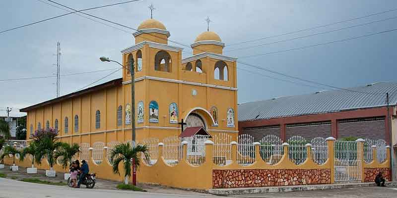

El Catolicismo fue la única religión profesada por los primeros habitantes de San Benito. En 1937, siendo el presidente de la República el General Jorge Ubico junto al Alcalde de San Benito en ese entonces, misioneros protestantes fueron los fundadores del primer templo protestante o evangélico, el cual denominaron Iglesia del Nazareno. Al transcurrir de los años fueron apareciendo nuevas religiones.
En la actualidad en la cabecera municipal existen varios templos Católicos que llevan el agregado del nombre del barrio en donde se encuentran ubicados. También existen varios templos evangélicos con distintos nombres.
Algunos templos católicos de San Benito son: Templo La Ermita de San Benito, Iglesia Parroquial, Iglesia Católica Vista Hermosa, Iglesia Católica Nuevo Porvenir, Iglesia Católica San Juan, Capilla de María de Los Dolores. Los otros templos cristianos incluyen 6 iglesias de Las Asambleas de Dios, y un instituto Bíblico, 4 Iglesias del Nazareno, 4 Iglesias Camino Bíblico y 5 Iglesias Evangelio Completo, entre las cuales están Príncipe de Paz y Profecía Universal. La Iglesia De Jesucristo De Los Santos De Los Últimos Días.
